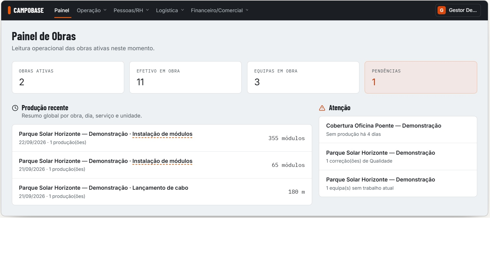
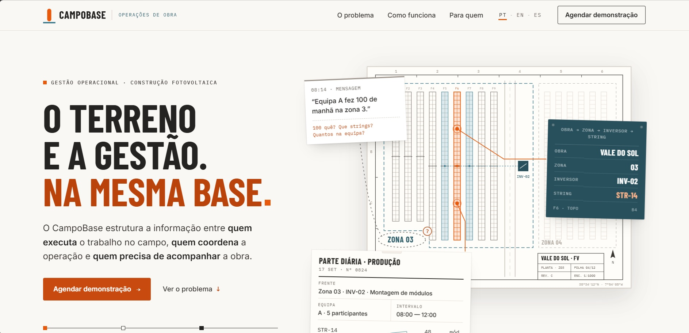
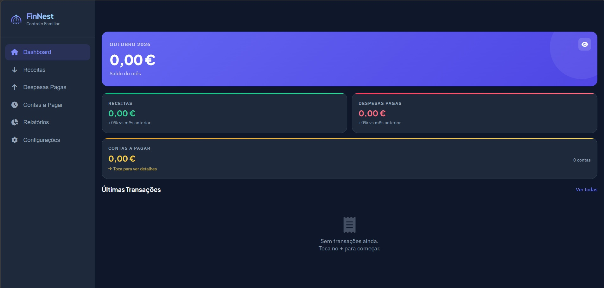
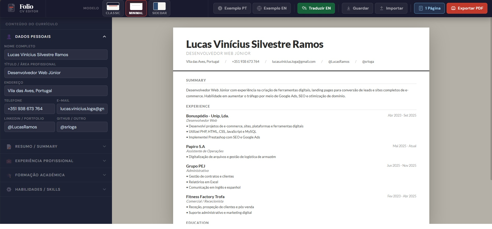
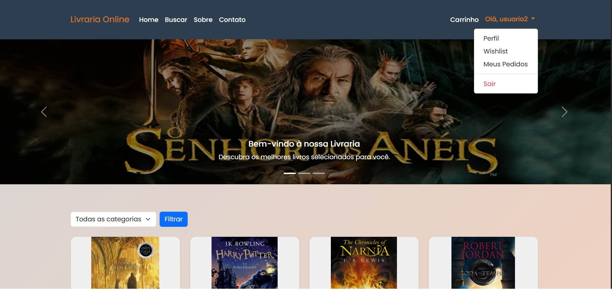

Com experiência em PHP, JavaScript e MySQL, manutenção de e-commerce e soluções digitais para operações reais.
Disponível para projetos pontuais e colaborações técnicas.
Conheça um pouco mais sobre minha trajetória
Atualmente desenvolvo o CampoBase, uma plataforma de gestão operacional para obras fotovoltaicas, em fase de demonstração e validação. Estou disponível para serviços pontuais de desenvolvimento, correções, manutenção e automatização de processos.
Participei na reconstrução substancial da loja AZ Habitação em PrestaShop, no contexto do meu trabalho na BonúsPódio, a experiência em programação na Garcia & Garcia e em operações e administração de obras no Grupo PEJ orienta o desenvolvimento de soluções para problemas reais de equipas e empresas.
Sou programador web com experiência em projetos de comércio eletrónico e desenvolvimento de aplicações, trabalho sobretudo com PHP, MySQL, JavaScript, HTML e CSS, incluindo manutenção e reconstrução de sistemas existentes.
Anos de Experiência
Projetos Concluídos
Tecnologias Dominadas
Minha jornada educacional e qualificações
Curso técnico focado em desenvolvimento web com ênfase em tecnologias modernas e práticas de programação.
Formação técnica em informática com base sólida em hardware, software e fundamentos da computação.
Conclusão do ensino secundário com foco em preparação para o mercado de trabalho e estudos superiores.
Participei do PGM, aprimorando meu inglês e habilidades gerais de comunicação para atuar em ambientes internacionais.
Tecnologias e ferramentas que utilizo no meu dia a dia
Desenvolvimento back-end, integração com bancos de dados MySQL e criação de APIs.
Estruturação semântica de páginas web, acessibilidade e SEO.
Estilização responsiva, animações e layouts modernos com Flexbox e Grid.
Interatividade, manipulação do DOM e desenvolvimento de aplicações dinâmicas.
Desenvolvimento e customização de plataformas e-commerce com foco em SEO.
Modelagem de bancos de dados, queries otimizadas e administração.
Criação de SPAs rápidas, responsivas e orientadas a componentes.
Controle de código, criação de branches e colaboração segura.
Minha jornada profissional completa
Alguns dos trabalhos que desenvolvi recentemente

Produto próprio em desenvolvimento, com demonstração funcional para gestão operacional de obras fotovoltaicas: produção, equipas, hierarquia de obra, registos e relatórios.

Landing page institucional desenvolvida para apresentar o CampoBase, uma plataforma de gestão operacional de obras fotovoltaicas. Combina uma identidade visual própria, elementos interativos, demonstrações do produto e suporte multilingue (PT/EN/ES).
Reconstrução substancial de uma loja online PrestaShop a partir de uma implementação existente.
Trabalho realizado no contexto profissional da BonúsPódio, loja comercial, que atualmente se encontra em pleno funcionamento.

Aplicação de página única para gestão financeira pessoal e familiar, com registo de receitas e despesas, acompanhamento de saldos, gráficos interativos e importação/exportação de dados.

Ferramenta de página única para criação e personalização de currículos, com modelos visuais, pré-visualização em tempo real, importação/exportação de dados e geração de PDF.

Sistema de livraria online desenvolvido como projeto full-stack, com painel administrativo, gestão de produtos, wishlist, carrinho de compras, avaliações de utilizadores e filtros avançados de pesquisa.
Vamos conversar sobre seu próximo projeto
lucas.vinicius.loga@gmail.com
+351 938 673 764
Santo Tirso, Portugal
Projetos pontuais e colaborações — mediante contacto